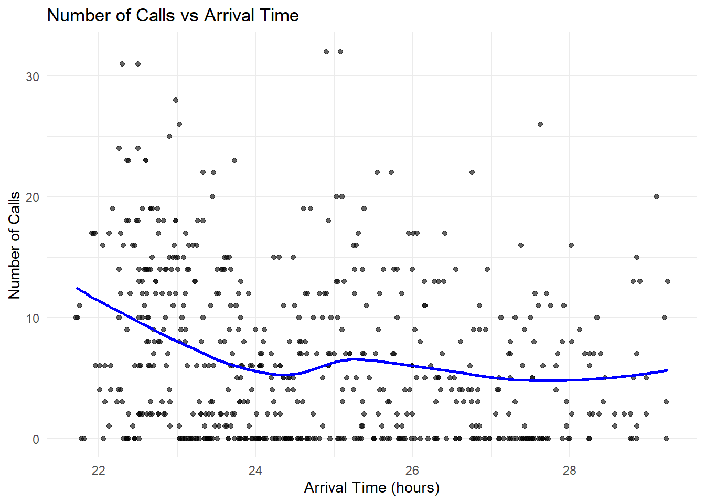
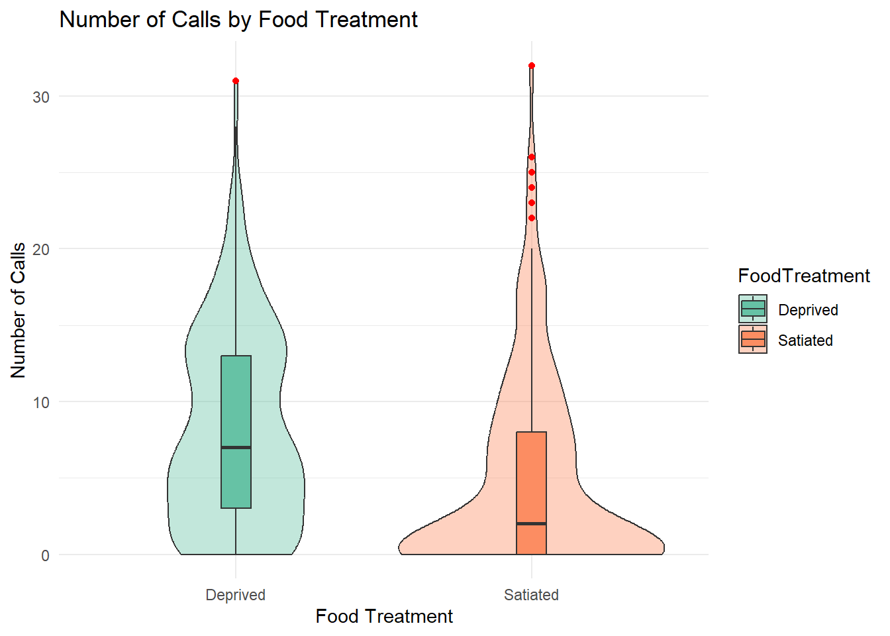
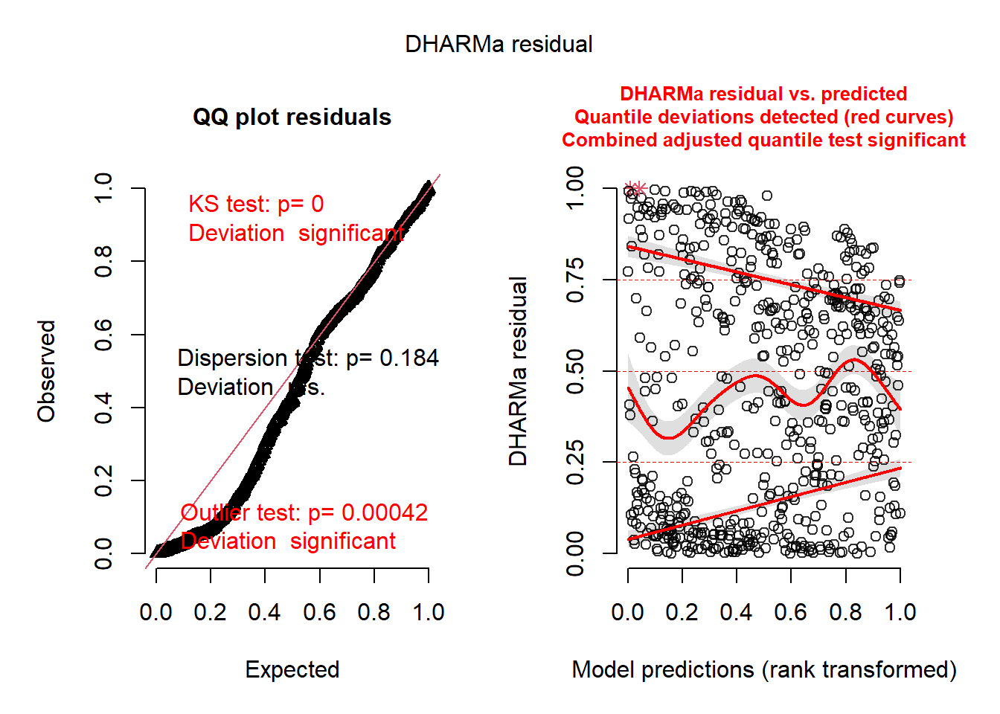
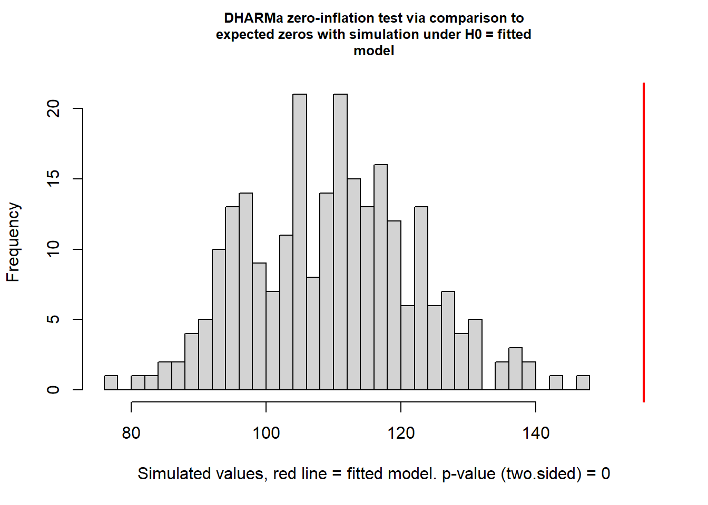

For both exercises that follow you will use the Owls data set (Owls.csv). These data come from a study of vocal begging behavior in owl nestlings.
Variables you’ll use:
NCalls: number of calls in 30 s before a parent’s arrival (response)
BroodSize: number of nestlings (use offset(log(BroodSize)))
SexParent: sex of visiting parent (factor)
FoodTreatment: “Deprived” vs “Satiated”
ArrivalTime: time within the night (numeric/continuous)
Nest: nest ID (cluster)
NestNight: grouping factor for “same nest, same night”, e.g. Nest.Dep vs Nest.Sat
library(tidyverse)
Warning: package 'tidyverse' was built under R version 4.4.2
Warning: package 'ggplot2' was built under R version 4.4.3
Warning: package 'tidyr' was built under R version 4.4.3
Warning: package 'purrr' was built under R version 4.4.3
── Attaching core tidyverse packages ──────────────────────── tidyverse 2.0.0 ──
✔ dplyr 1.1.4 ✔ readr 2.1.5
✔ forcats 1.0.0 ✔ stringr 1.5.1
✔ ggplot2 4.0.0 ✔ tibble 3.2.1
✔ lubridate 1.9.3 ✔ tidyr 1.3.1
✔ purrr 1.1.0
── Conflicts ────────────────────────────────────────── tidyverse_conflicts() ──
✖ dplyr::filter() masks stats::filter()
✖ dplyr::lag() masks stats::lag()
ℹ Use the conflicted package (<http://conflicted.r-lib.org/>) to force all conflicts to become errors
library(geepack)
Warning: package 'geepack' was built under R version 4.4.3
library(sjPlot)
Warning: package 'sjPlot' was built under R version 4.4.3
Attaching package: 'sjPlot'
The following object is masked from 'package:ggplot2':
set_theme
library(ggeffects)
Warning: package 'ggeffects' was built under R version 4.4.3
library(glmmTMB)
Warning: package 'glmmTMB' was built under R version 4.4.3
library(DHARMa)
Warning: package 'DHARMa' was built under R version 4.4.3
This is DHARMa 0.4.7. For overview type '?DHARMa'. For recent changes, type news(package = 'DHARMa')
library(lmtest)
Warning: package 'lmtest' was built under R version 4.4.3
Loading required package: zoo
Warning: package 'zoo' was built under R version 4.4.2
Attaching package: 'zoo'
The following objects are masked from 'package:base':
as.Date, as.Date.numeric
# Load data Owls <-read.csv("Owls.csv") # Create variables used in the analysisOwls$NCalls <- Owls$SiblingNegotiation Owls$LBroodSize <-log(Owls$BroodSize) Owls$NestNight <-factor(ifelse(Owls$FoodTreatment =="Deprived", paste(Owls$Nest, ".Dep", sep=""), paste(Owls$Nest, ".Sat", sep="")))
Plot the data. Make a quick visualization of NCalls vs ArrivalTime and a box/violin plot by FoodTreatment. Briefly describe patterns.
# Scatter plot: NCalls vs ArrivalTimeggplot(Owls, aes(x = ArrivalTime, y = NCalls)) +geom_point(alpha =0.6) +geom_smooth(method ="loess", se =FALSE, color ="blue") +labs(title ="Number of Calls vs Arrival Time",x ="Arrival Time (hours)",y ="Number of Calls") +theme_minimal()
`geom_smooth()` using formula = 'y ~ x'

# Box + violin plot: NCalls by FoodTreatmentggplot(Owls, aes(x = FoodTreatment, y = NCalls, fill = FoodTreatment)) +geom_violin(alpha =0.4) +geom_boxplot(width =0.1, outlier.color ="red", outlier.shape =16) +labs(title ="Number of Calls by Food Treatment",x ="Food Treatment",y ="Number of Calls") +theme_minimal() +scale_fill_brewer(palette ="Set2")

Start with a Poisson GLM. Fit NCalls ~ offset(LBroodSize) + SexParentFoodTreatment + SexParentArrivalTime (family = Poisson). Comment on overdispersion using a dispersion statistic or residual plot.
Warning in diff(as.numeric(id)): NAs introduced by coercion
summary(gee_model)
Warning in sqrt(diag(covmat)): NaNs produced
Warning in sqrt(diag(covmatgam)): NaNs produced
Warning in sqrt(diag(object$vbeta)): NaNs produced
Warning in sqrt(diag(object$vgamma)): NaNs produced
Call:
geeglm(formula = NCalls ~ SexParent * FoodTreatment + SexParent *
ArrivalTime + offset(LBroodSize), family = poisson(link = "log"),
data = Owls, id = Nest, corstr = "exchangeable")
Coefficients:
Estimate Std.err Wald Pr(>|W|)
(Intercept) 3.759655 NaN NaN NaN
SexParentMale 0.106388 0.062366 2.91 0.088 .
FoodTreatmentSatiated -0.572186 0.099038 33.38 7.59e-09 ***
ArrivalTime -0.128612 NaN NaN NaN
SexParentMale:FoodTreatmentSatiated 0.083628 NaN NaN NaN
SexParentMale:ArrivalTime -0.001441 NaN NaN NaN
---
Signif. codes: 0 '***' 0.001 '**' 0.01 '*' 0.05 '.' 0.1 ' ' 1
Correlation structure = exchangeable
Estimated Scale Parameters:
Estimate Std.err
(Intercept) 6.138 NaN
Link = identity
Estimated Correlation Parameters:
Estimate Std.err
alpha -0.001672 7.778e-06
Number of clusters: 1 Maximum cluster size: 599
Try AR(1). Fit GEE with cluster id = NestNight and corstr = “ar1”. Compare parameter estimates and SEs to the exchangeable model. Which feels more biologically reasonable here?
##final model with intercation removedgee_final <-geeglm(NCalls ~FoodTreatment + ArrivalTime +offset(LBroodSize),family =poisson(link ="log"),data = Owls,id = NestNight,corstr ="ar1")# Test interactions using Wald-type F-testsanova(gee_final, test ="Wald")
Interpretation. From your final GEE: interpret the effect of FoodTreatment and ArrivalTime on NCalls. Plot the predicted relationships.
For a log link, exponentiate coefficients to get multiplicative effects on the expected mean richness. These are also provided with the tab_model function
You are calculating adjusted predictions on the population-level (i.e.
`type = "fixed"`) for a *generalized* linear mixed model.
This may produce biased estimates due to Jensen's inequality. Consider
setting `bias_correction = TRUE` to correct for this bias.
See also the documentation of the `bias_correction` argument.
Some of the focal terms are of type `character`. This may lead to
unexpected results. It is recommended to convert these variables to
factors before fitting the model.
The following variables are of type character: `FoodTreatment`
Data points may overlap. Use the `jitter` argument to add some amount of
random variation to the location of data points and avoid overplotting.
Data points may overlap. Use the `jitter` argument to add some amount of
random variation to the location of data points and avoid overplotting.
Data points may overlap. Use the `jitter` argument to add some amount of
random variation to the location of data points and avoid overplotting.
fit a random-intercept GLMM with NCalls ~ offset(LBroodSize) + SexParentFoodTreatment + SexParentArrivalTime + (1|NestNight) (family = Poisson). Use DHARMa to check residuals; comment on fit.
DHARMa:testOutliers with type = binomial may have inflated Type I error rates for integer-valued distributions. To get a more exact result, it is recommended to re-run testOutliers with type = 'bootstrap'. See ?testOutliers for details

Negative binomial GLMM. Refit with family = nbinom2. Compare AIC and DHARMa plots to the Poisson GLMM.
Zero-inflation check. Use DHARMa’s zero-inflation test on your NB model. If indicated, add a constant zero-inflation term (ziformula = ~ 1). Does AIC improve?
The AIC got lower so yes, the zero inflation did improve the model.
testZeroInflation(res_nbfit1)

DHARMa zero-inflation test via comparison to expected zeros with
simulation under H0 = fitted model
data: simulationOutput
ratioObsSim = 1.4, p-value <2e-16
alternative hypothesis: two.sided
# Zero-inflated NB model with constant zero-inflationzinb_model <-glmmTMB(NCalls ~offset(LBroodSize) + SexParent*FoodTreatment + SexParent*ArrivalTime + (1|NestNight),ziformula =~1, # constant zero-inflationfamily = nbinom2,data = Owls)summary(zinb_model)
Model reduction. Use drop1() (LRT/AIC) to remove non-significant interactions and then non-significant main effects (one at a time). State your final model.
The interactions were not significant, so they were removed. the final model contains just the sex parent, food treatment and arrival time without any intercation
Compare GEE vs GLMM. Do the biological conclusions match? Briefly explain the difference between marginal (GEE) and conditional (GLMM) effects.
Both models indicate Satiated parents make fewer calls than Deprived parents, and later arrival reduces calls. The direction and overall magnitude of effects are similar, so biological conclusions are consistent. Minor differences in effect size are expected due to model assumptions.